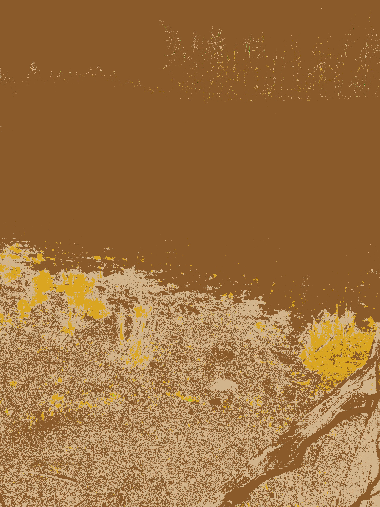
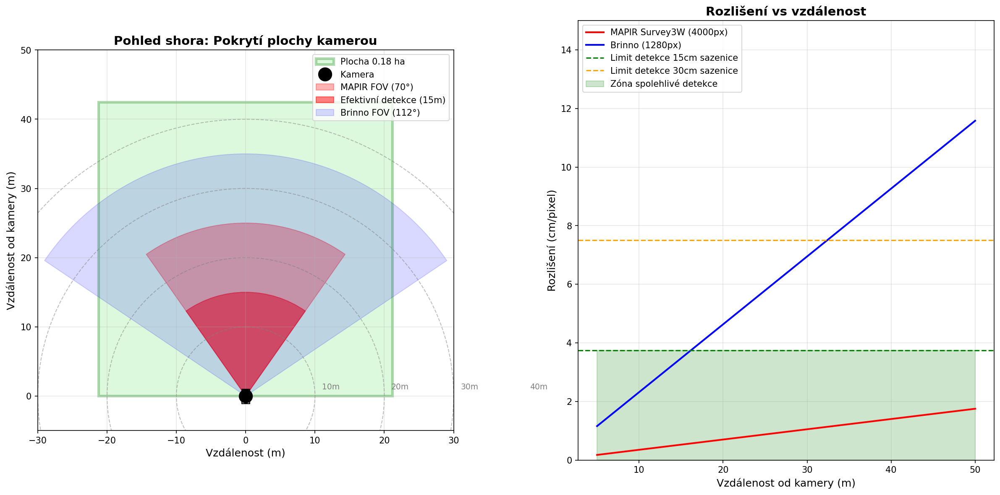

10 / Multispektrální snímky
Galerie snímků z monitoringu
Ukázky RGB, NIR a CIR kompozitních snímků z experimentálních ploch

NIR porovnání – Plocha 1
Porovnání blízkoinfračerveného snímku (850 nm) z kamery MAPIR Survey3W OCN. Zdravá vegetace reflektuje výrazně v NIR pásmu.
NIR 850 nm

NDVI vegetační analýza
Normalizovaný vegetační index (NDVI) vypočtený z NIR a červeného pásma. Vyšší hodnoty = zdravější vegetace.
NDVI

CIR nepravé barvy – Plocha 1
Color-infrared (CIR) kompozit zobrazující vegetaci v červených tónech. Aktivní fotosyntéza se projevuje sytou červenou barvou.
CIR kompozit

NIR porovnání – Plocha 2
Blízkoinfračervený snímek druhé experimentální plochy pro srovnání vegetačního pokryvu mezi variantami.
NIR 850 nm

NDVI – Plocha 2
NDVI analýza druhé plochy. Porovnání rozdílů ve vitalitě sazenic mezi frézovanými a nefrézovanými variantami.
NDVI

CIR nepravé barvy – Plocha 2
CIR kompozit druhé experimentální plochy. Prostorový vzor vegetace odpovídá uspořádání výsadby.
CIR kompozit

NIR porovnání – Plocha 3
Třetí experimentální plocha v NIR pásmu. Slouží ke kalibraci a cross-validaci vegetačních indexů napříč lokalitami.
NIR 850 nm

Analýza pokrytí kamerami
Vizualizace pokrytí experimentálních ploch časosběrnými kamerami Brinno TLC 2020 a MAPIR Survey3W OCN.
Pokrytí